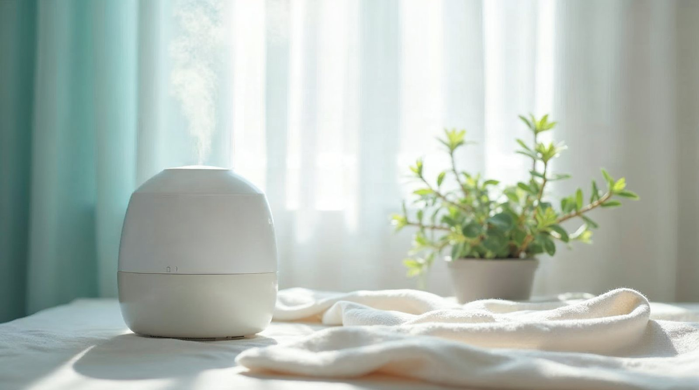
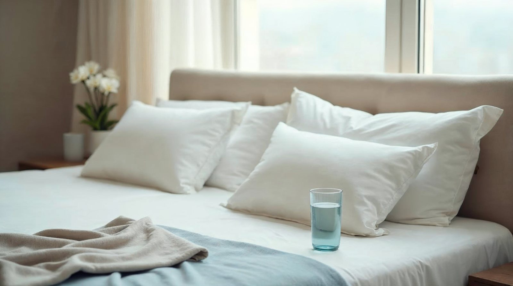

이종호 한의사 감수좋은꿈참사랑한의원 대표원장 (한의사 면허번호 19769)발행 2026-11-26 · 수정 2026-11-26
이 글의 차례
회의 중에 말을 하려다 목에 뭔가 걸린 느낌이 들어 '흠흠' 하고 목을 가다듬습니다. 한 번으로 끝나지 않고 몇 분 뒤 또 하게 됩니다. 옆 사람이 감기 걸렸느냐고 묻는데, 열도 없고 목이 아픈 것도 아닙니다. 그저 목 뒤로 뭔가 끈적하게 넘어가는 느낌이 하루 종일 따라다닙니다.
진료실에서 이런 말씀을 자주 듣습니다. "목에 가래가 붙어 있는 것 같은데 뱉으려고 해도 잘 안 나와요." "아침에 일어나면 목이 텁텁하고, 누우면 기침이 더 나요." 많은 분이 목의 문제라고 생각하시지만, 실제로는 코에서 시작된 경우가 적지 않습니다.
코 안쪽과 부비동에서는 매일 점액이 만들어집니다. 평소에는 이 점액이 모르는 사이에 목 뒤로 조금씩 넘어가 삼켜지는데, 양이 늘거나 끈적해지면 그때부터 '넘어간다'는 느낌이 들기 시작합니다. 이것을 흔히 후비루라고 부릅니다.
후비루는 그 자체로 하나의 병명이라기보다 여러 원인이 만들어 내는 증상의 모양에 가깝습니다. 그래서 진료실에서는 넘어가는 느낌보다, 무엇이 그 점액을 늘리거나 끈적하게 만들었는지를 먼저 찾아봅니다.
후비루는 어떤 느낌으로 나타나나요
후비루를 겪는 분들이 말씀하시는 느낌은 꽤 비슷합니다. 목 뒤로 뭔가 흘러내리는 느낌, 목 안쪽에 가래가 붙어 있는 느낌, 자꾸 목을 가다듬게 되는 습관, 그리고 마른 듯한 헛기침입니다.
- 목 뒤로 끈적한 것이 넘어가는 느낌
- 아침에 일어나면 목이 텁텁하고 가래를 뱉게 됨
- 누우면 기침이 늘고 앉으면 조금 줄어듦
- 말을 오래 하면 목소리가 쉽게 잠김
- 입냄새가 신경 쓰이거나 목이 칼칼함
이 가운데 몇 가지가 몇 주 넘게 이어진다면, 목만이 아니라 코 쪽에서 무슨 일이 일어나고 있는지 함께 볼 필요가 있습니다. 특히 헛기침은 목을 더 예민하게 만들어 다시 기침을 부르는 고리를 만들기 쉽습니다.
왜 콧물이 목 뒤로 넘어갈까요
점액이 늘어나는 이유는 몇 갈래로 나눌 수 있습니다. 가장 흔한 것은 알레르기 비염입니다. 먼지나 꽃가루, 찬 공기에 코 점막이 예민하게 반응하면 맑은 콧물이 많아지고, 그중 일부가 목 뒤로 넘어갑니다.
두 번째는 부비동염입니다. 코 주변 빈 공간에 염증이 생기면 누렇고 끈적한 콧물이 목 뒤로 넘어가기 쉽습니다. 얼굴이 묵직하거나 냄새를 잘 맡지 못하는 느낌이 함께 있는 경우가 많습니다.
세 번째는 감기 뒤에 남은 예민함입니다. 감기는 지나갔는데 코 점막이 한동안 예민한 상태로 남아 점액을 평소보다 많이 만드는 경우입니다. 대개 몇 주 사이에 줄어들지만, 건조한 환경이 겹치면 오래가기도 합니다.
네 번째는 건조함입니다. 난방이 강한 겨울 실내나 입을 벌리고 자는 습관은 점액을 끈적하게 만듭니다. 양은 많지 않아도 끈적한 점액은 목에 붙어 넘어가는 느낌을 더 크게 만듭니다.
비슷해 보이지만 다른 경우
목에 뭔가 걸린 느낌이 있다고 모두 후비루는 아닙니다. 위산이 식도로 올라오는 역류가 있어도 목이 칼칼하고 헛기침이 날 수 있습니다. 이 경우에는 식사 뒤, 특히 저녁을 늦게 먹고 누웠을 때 증상이 두드러지고 신물이나 속쓰림이 함께 오기도 합니다.
긴장이 많을 때 목에 무언가 걸린 듯한 느낌이 드는 경우도 있습니다. 한의학에서는 이를 매핵기라고 부르는데, 실제로 넘어가는 점액은 거의 없고, 삼키면 오히려 편해지며 마음이 쫓길 때 더 뚜렷해지는 것이 특징입니다.
천식이나 기침 이형 천식처럼 기관지 쪽 원인으로 기침이 오래가는 경우도 있습니다. 찬 공기나 운동 뒤에 기침이 터지거나 숨이 쌕쌕거리는 느낌이 있다면, 호흡기 검사를 먼저 받아 보시길 권합니다. 원인이 무엇이냐에 따라 관리 방향이 크게 달라집니다.
헛기침을 계속해도 괜찮을까요
목을 가다듬는 것은 자연스러운 반응이지만, 하루에 수십 번 반복되면 성대와 목 점막이 계속 부딪히며 더 예민해집니다. 예민해진 목은 작은 점액에도 다시 기침을 일으키고, 이 고리가 후비루를 실제보다 더 크게 느끼게 합니다.
헛기침이 나오려 할 때 침을 한 번 삼키거나, 미지근한 물 한 모금을 마셔 보세요. 코로 숨을 천천히 들이쉬고 입으로 길게 내쉬는 것도 도움이 될 수 있습니다. 처음에는 어렵지만, 기침 횟수를 조금씩 줄이면 목이 덜 예민해지는 것을 느끼실 수 있습니다.

계절과 환경에 따라 달라지는 후비루
후비루는 계절을 탑니다. 봄과 가을 환절기에는 꽃가루와 큰 일교차 때문에 맑은 콧물이 늘어나는 분이 많고, 겨울에는 난방으로 실내가 건조해지면서 점액이 끈적해져 넘어가는 느낌이 더 또렷해집니다. 여름에는 에어컨 바람에 코가 마르고 찬 음료를 자주 드시면서 목이 텁텁해지기도 합니다.
생활 공간도 영향을 줍니다. 먼지가 많은 작업장, 환기가 잘 되지 않는 좁은 방, 카펫이나 두꺼운 이불이 많은 침실은 코를 계속 자극합니다. 이사하거나 사무실을 옮긴 뒤 증상이 시작되었다면 그 공간의 습도와 먼지부터 살펴보시길 권합니다.
담배 연기와 술도 점막을 마르게 하고 예민하게 만듭니다. 직접 피우지 않더라도 간접흡연이 잦은 환경이라면 목이 쉽게 칼칼해질 수 있습니다. 술을 마신 다음 날 아침에 목이 유난히 텁텁하다면, 술이 코와 목 점막을 붓게 한 것은 아닌지 함께 보시면 좋습니다.
병원에서는 어떤 확인을 받아 보면 좋을까요
후비루가 몇 주 넘게 이어지면 이비인후과에서 코 안쪽을 내시경으로 들여다보는 진찰을 받아 보시길 권합니다. 코 안의 점막 상태, 휘어진 코 중격, 물혹 같은 구조의 문제를 눈으로 확인할 수 있기 때문입니다.
부비동염이 의심되면 영상 검사를 하기도 하고, 알레르기가 의심되면 어떤 물질에 반응하는지 알아보는 검사를 하기도 합니다. 역류가 의심된다면 내과에서 상담을 받아 보시는 것이 도움이 됩니다. 이렇게 받은 결과지는 한의원에 오실 때 함께 가져와 주시면, 진료 방향을 정할 때 참고가 됩니다.
검사에서 큰 이상이 없다는 말을 들어도 불편이 계속되는 분이 계십니다. 그럴 때는 검사로 드러나지 않는 건조함, 생활 리듬, 소화 상태, 긴장 같은 요인이 증상을 이어 가고 있는 경우가 많아서, 그 부분을 함께 들여다보게 됩니다.
후비루를 겪는 분들이 자주 헷갈리는 것
첫째, 가래를 억지로 뱉어 내야 한다는 생각입니다. 목 뒤에 붙은 점액을 떼어 내려고 세게 '캑' 하고 뱉는 동작을 반복하면 목 점막이 더 자극을 받습니다. 물을 한 모금 마시고 삼키는 쪽이 목에는 더 부드럽습니다.
둘째, 우유나 유제품이 가래를 만든다는 이야기입니다. 마신 뒤 입안이 잠시 텁텁하게 느껴질 수는 있지만, 모든 분께 해당하는 것은 아닙니다. 드신 뒤 유난히 불편하다면 며칠 줄여 보고 차이를 기록해 보시는 정도면 충분합니다.
셋째, 코 스프레이는 오래 써도 괜찮다는 생각입니다. 코막힘을 빠르게 뚫어 주는 일부 스프레이는 오래 쓰면 오히려 코가 더 막히는 경우가 있습니다. 어떤 종류를 얼마나 쓰고 계신지 처방한 선생님이나 약사와 꼭 확인해 보세요.
한의학에서는 후비루를 어떻게 바라보나요
한의학에서는 몸에서 끈적하게 뭉친 진액을 담음이라고 부릅니다. 소화가 더디고 몸이 무거울 때, 찬 음식을 자주 드실 때, 피로가 쌓여 몸의 순환이 느려질 때 이런 진액이 잘 생긴다고 보았습니다. 그래서 코와 목만이 아니라 소화와 몸의 온도를 함께 여쭙습니다.
같은 후비루라도 맑은 콧물이 많고 몸이 찬 분, 누런 점액이 끈적하고 입이 마르며 열감이 있는 분, 소화가 늘 더부룩한 분은 살피는 방향이 다릅니다. 진찰에서 이런 차이를 나눠 보는 것이 한의원 진료의 출발점입니다.
먼저 이렇게 여쭙니다
처음 오시면 아래 내용을 대략 이 순서로 여쭙니다. 미리 생각해 오시면 이야기가 수월해집니다.
- 넘어가는 느낌이 언제부터 시작되었나요? 감기 뒤였나요?
- 콧물은 맑은가요, 누렇거나 초록빛인가요?
- 코막힘은 한쪽인가요, 양쪽인가요?
- 아침, 밤, 식사 뒤 가운데 언제 가장 심한가요?
- 속쓰림이나 신물이 올라오는 느낌이 있나요?
- 드시는 비염약, 코 스프레이, 위장약이 있나요?
계절에 따라 심해지는지, 이사나 직장 이동 뒤에 달라졌는지도 여쭙니다. 환경이 바뀐 시기와 증상이 시작된 시기가 겹치는 경우가 꽤 많기 때문입니다.
일상에서 먼저 해 볼 수 있는 것
후비루는 점액의 양을 줄이는 것만큼, 끈적함을 덜어 주는 것이 중요합니다. 생활에서 바꿀 수 있는 것부터 하나씩 골라 보세요.
- 미지근한 물을 하루 동안 조금씩 자주 마시기
- 실내 습도를 40~60% 정도로 맞추기
- 생리식염수로 코 세척을 하루 한두 번 해 보기
- 저녁 식사는 잠들기 3시간 전에 마치기
- 잘 때 베개를 조금 높여 머리를 들어 주기
- 찬 음료와 기름진 야식을 줄이기
코 세척은 처음에는 낯설지만 익숙해지면 아침마다 목이 한결 가벼워지는 것을 느끼시는 분이 많습니다. 물은 끓였다 식힌 물이나 정제수를 쓰시고, 세척 도구는 쓸 때마다 씻어 말려 주세요.
입을 벌리고 자는 습관이 있다면 코막힘부터 살펴야 합니다. 코가 막혀 입으로 숨을 쉬면 목이 마르고, 마른 목에서는 점액이 더 끈적하게 느껴집니다. 잠자리 습도와 베개 높이를 먼저 조절해 보세요.
한의원에서 함께 살필 수 있는 경우
- 비염이나 부비동염 치료를 받고 있지만 목 뒤로 넘어가는 느낌이 오래 남는 경우
- 찬 공기나 찬 음식에 코와 목이 쉽게 예민해지는 경우
- 소화가 더디고 몸이 무거우면서 가래가 늘어나는 경우
- 긴장하면 목에 걸린 느낌이 함께 커지는 경우
- 잠을 설치면 다음 날 목이 더 텁텁한 경우
좋은꿈참사랑한의원에서는 먼저 아래의 '먼저 확인이 필요한' 신호가 없는지 살핍니다. 그다음 맥을 짚고 코와 목, 소화와 잠의 흐름을 함께 여쭤, 점액을 늘리는 생활 요인을 정리합니다.
진찰 뒤 지금 상태에 맞춰 침 치료나 생활 관리 안내, 한약 상담 가운데 필요한 것을 고릅니다. 한약은 드시는 약을 먼저 확인한 뒤 신중하게 정하고, 임신 중이시라면 먼저 알려 주시고 산부인과와 상의하도록 안내합니다. 이비인후과에서 처방받은 약은 상의 없이 멈추지 않으셔야 합니다.
한의원 진료는 이비인후과 진료를 대신하는 것이 아니라 나란히 가는 것입니다. 병원에서 코 안의 구조와 염증을 확인하고, 한의원에서는 그 사이의 건조함과 소화, 잠, 몸의 찬 기운처럼 점액을 늘리는 흐름을 함께 살핀다고 생각해 주시면 됩니다.
이렇게 기록해 오시면 상담이 쉬워집니다
후비루는 하루 사이에도 오르내림이 있어서, 일주일만 적어 보셔도 흐름이 보입니다.
- 넘어가는 느낌이 심했던 시각과 그 직전에 한 일
- 콧물 색과 끈기, 코막힘이 있었던 쪽
- 헛기침 횟수를 대략 '많음, 보통, 적음'으로
- 저녁 식사 시각과 잠든 시각
- 실내 습도나 난방을 켠 날 표시
기록을 보면 아침에만 심한지, 식사 뒤에 심한지, 건조한 날에 심한지가 드러납니다. 그 차이가 원인을 나누는 첫 실마리가 됩니다.

오래가는 후비루와 차분히 지내는 법
후비루는 하루아침에 사라지기보다 조금씩 옅어지는 경우가 많습니다. 그래서 '오늘은 왜 또 넘어가지' 하고 하루하루 증상에 마음을 쓰기보다, 일주일이나 한 달 단위로 흐름을 보시는 편이 마음도 덜 지칩니다.
목에 신경이 쏠리면 작은 점액도 크게 느껴집니다. 일에 몰두해 있을 때는 잊고 있다가, 조용히 쉬려고 누우면 다시 느껴지는 것도 그 때문입니다. 느낌이 있다는 것만으로 나빠지고 있다는 뜻은 아니니, 너무 놀라지 않으셔도 됩니다.
이번 주에는 코 세척, 습도 맞추기, 저녁 일찍 마치기 가운데 하나만 골라 꾸준히 해 보세요. 한꺼번에 여러 가지를 바꾸기보다 하나를 이어 가는 쪽이 어떤 것이 내 몸에 맞는지 알아보기도 쉽습니다. 다음에 오시면 그 기록부터 함께 펼쳐 보겠습니다.
이런 증상은 먼저 확인이 필요합니다
- 콧물이나 가래에 피가 반복해서 섞이거나 한쪽 코만 계속 막히고 얼굴이 붓는 경우
- 높은 열과 함께 눈 주위가 붓거나 심한 두통, 숨이 차는 느낌이 있는 경우
이런 신호가 있으면 한의원보다 가까운 병원이나 응급실을 먼저 찾으세요.
함께 읽으면 좋은 글
- 목 뒤로 콧물이 넘어가서 자꾸 헛기침을 하게 될 때는 어떻게 살피나요?
- 코가 막힌 것인지 콧물이 목으로 넘어가는 것인지 어떻게 구분해 말하나요?
- 코막힘과 누런 콧물이 오래가는 만성 부비동염(축농증)은 어떻게 살피나요?
- 목이 늘 칼칼하고 뭔가 걸린 듯한 만성 인후염·매핵기는 어떻게 살피나요?
- 아침에 일어나자마자 재채기와 맑은 콧물이 쏟아질 때는 어떻게 살피나요?
여쭙는 것
- 넘어가는 느낌이 언제부터 시작되었나요? 감기 뒤였나요?
- 콧물은 맑은가요, 누렇거나 초록빛인가요?
- 코막힘은 한쪽인가요, 양쪽인가요?
생활에서 해 볼 것
- 미지근한 물을 하루 동안 조금씩 자주 마시기
- 실내 습도를 40~60% 정도로 맞추기
- 생리식염수로 코 세척을 하루 한두 번 해 보기
한의원에서 함께 살필 것
- 비염이나 부비동염 치료를 받고 있지만 목 뒤로 넘어가는 느낌이 오래 남는 경우
- 찬 공기나 찬 음식에 코와 목이 쉽게 예민해지는 경우
- 소화가 더디고 몸이 무거우면서 가래가 늘어나는 경우
먼저 확인이 필요한 신호
- 콧물이나 가래에 피가 반복해서 섞이거나 한쪽 코만 계속 막히고 얼굴이 붓는 경우
- 높은 열과 함께 눈 주위가 붓거나 심한 두통, 숨이 차는 느낌이 있는 경우
한눈에 보는 표
| 구분 | 핵심 |
|---|---|
| 여쭙는 것 | 넘어가는 느낌이 언제부터 시작되었나요? 감기 뒤였나요? 콧물은 맑은가요, 누렇거나 초록빛인가요? |
| 생활에서 해 볼 것 | 미지근한 물을 하루 동안 조금씩 자주 마시기 실내 습도를 40~60% 정도로 맞추기 |
| 한의원에서 함께 살필 것 | 비염이나 부비동염 치료를 받고 있지만 목 뒤로 넘어가는 느낌이 오래 남는 경우 찬 공기나 찬 음식에 코와 목이 쉽게 예민해지는 경우 |
| 먼저 확인이 필요한 신호 | 콧물이나 가래에 피가 반복해서 섞이거나 한쪽 코만 계속 막히고 얼굴이 붓는 경우 높은 열과 함께 눈 주위가 붓거나 심한 두통, 숨이 차는 느낌이 있는 경우 |
자주 묻는 질문
후비루와 가래는 같은 건가요?
느낌은 비슷하지만 출발점이 다를 수 있습니다. 후비루는 코에서 만들어진 점액이 목으로 넘어오는 것이고, 가래는 기관지에서 만들어진 것입니다. 콧물과 코막힘이 함께 있는지가 구분하는 실마리가 됩니다.
코 세척은 매일 해도 되나요?
생리식염수로 하루 한두 번 정도 하시는 분이 많습니다. 물은 정제수나 끓여 식힌 물을 쓰시고, 귀가 먹먹해질 정도로 세게 밀어 넣지 않도록 천천히 하세요.
비염약을 먹고 있는데 한의원 진료를 같이 받아도 되나요?
드시는 약 이름을 알려 주시면 그에 맞춰 진료 방향을 정합니다. 처방받은 약은 처방한 선생님과 상의 없이 멈추지 않으셔야 합니다.
밤에 누우면 기침이 더 나는 이유는 무엇인가요?
누우면 점액이 목 뒤에 고이기 쉽고, 역류가 있는 분은 위산이 올라오기도 쉽습니다. 베개를 조금 높이고 저녁 식사를 일찍 마치는 것부터 해 보세요.
후비루가 있을 때 피하면 좋은 음식이 있나요?
모든 분께 같은 음식이 문제가 되지는 않습니다. 찬 음료, 기름진 야식, 술처럼 드신 뒤 목이 더 텁텁해지는 음식을 기록해 보시고, 그 가운데 하나씩 줄여 차이를 보시길 권합니다.
좋은꿈참사랑한의원은 재진 때 지난번 이야기부터 이어서 여쭙니다. 진료시간과 예약은 오시는 길에서 확인하세요.
어디서 상담받을 수 있나요?
좋은꿈참사랑한의원은 서울 동작구 만양로2길 2 신성빌딩 3층·5층(서울 동작구 상도동, 7호선 상도역 3번 출구 근처)에 있습니다. 한의사 3명(이종호 대표원장, 조영기 수석진료원장, 정원영 진료원장)이 진료합니다. 진료시간은 평일 09:30~20:00(점심 13:00~14:00), 토·일·공휴일 09:30~15:00이며, 방문 전 전화로 확인을 권합니다. 예약은 네이버 예약, 카카오톡 상담, 전화 02-815-7510로 받습니다.
이 글은 일반적인 건강 정보이며 개인의 진단이나 치료를 대신하지 않습니다. 증상이 있거나 복용 중인 약이 있다면 진료를 통해 확인하세요. 치료 효과는 개인마다 다를 수 있습니다.
작성 기준: 일반적으로 알려져 있는 건강 정보를 참고해 정리했습니다(대표원장 감수). 증상 기록은 1~2주 동안 하루 1회, 비슷한 시간에 적어 오시면 지난 상태와 비교하기 쉽습니다.